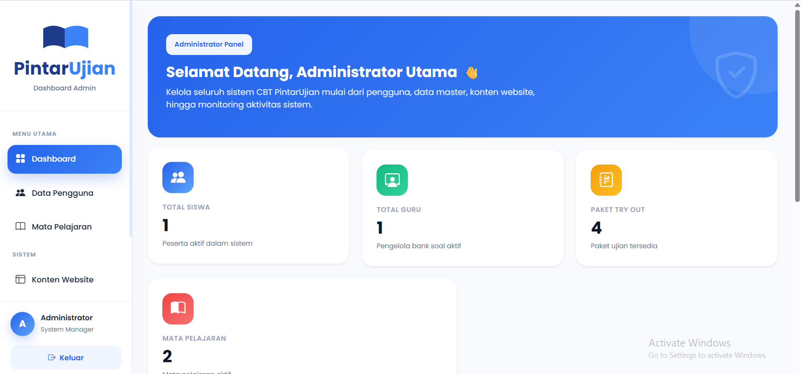
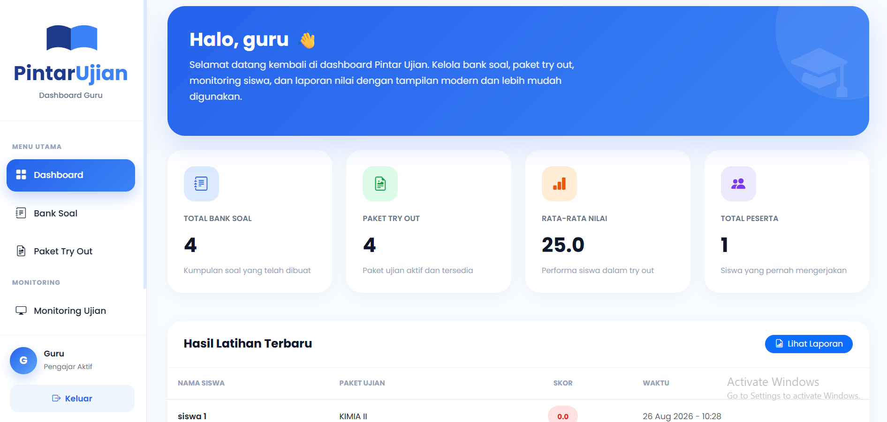
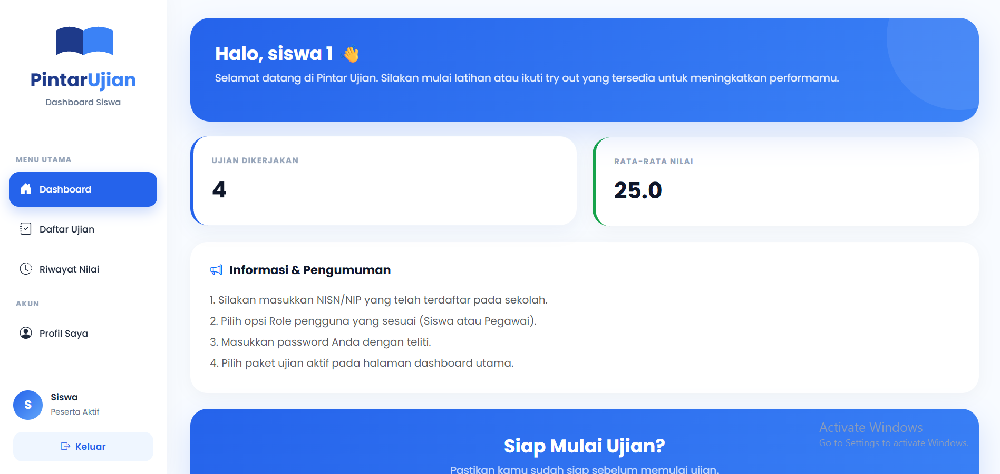
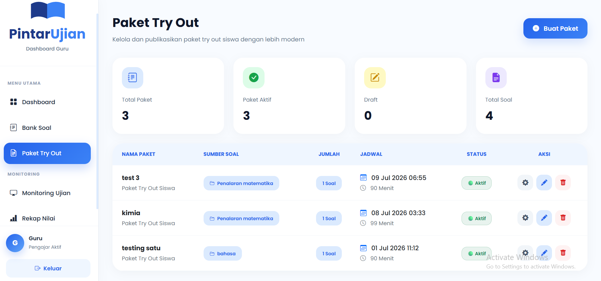
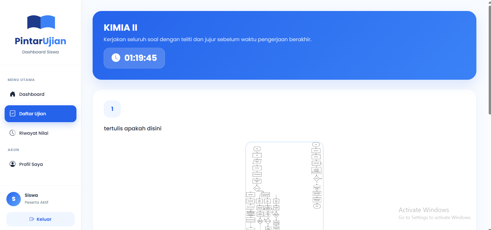

About the Project
PintarUjian is a web-based tryout and practice platform designed for sixth-grade elementary school students. The system helps students practice exams while making it easier for teachers to manage questions and results.
Manual Workflow
The existing tryout process relied on manual question preparation, paper-based exams, and manual scoring. This made the process time-consuming for both teachers and students.
Digital Automation
I designed and developed a web-based tryout system with separate roles for administrators, teachers, and students. The system includes question management, online exams, automatic scoring, and result reports.
Workflow Step-by-Step
Research
User Flow
Wireframe
UI Design
Development
Testing
What Built Into The System
- ✓ Question bank management
- ✓ Online tryout and practice
- ✓ Automatic scoring
- ✓ Student result reports
- ✓ Admin, teacher, and student roles
User Roles Breakdown

Tampilan Admin
Pengelolaan data pengguna, hak akses, dan manajemen sistem.

Tampilan Guru
Manajemen bank soal, pembuatan jadwal ujian, dan rekap nilai.

Tampilan Siswa
Halaman pengerjaan tryout online, timer, dan riwayat hasil ujian.
Interface & Process Screenshots

Halaman Tryout Online

Dashboard Laporan & Management
Final Result 🚀
PintarUjian provides a more structured digital tryout experience while simplifying exam management and scoring for teachers.
What I Learned 💡
This project helped me understand how to translate user needs into a functional interface and taught me how design decisions can directly affect the usability of an educational system.